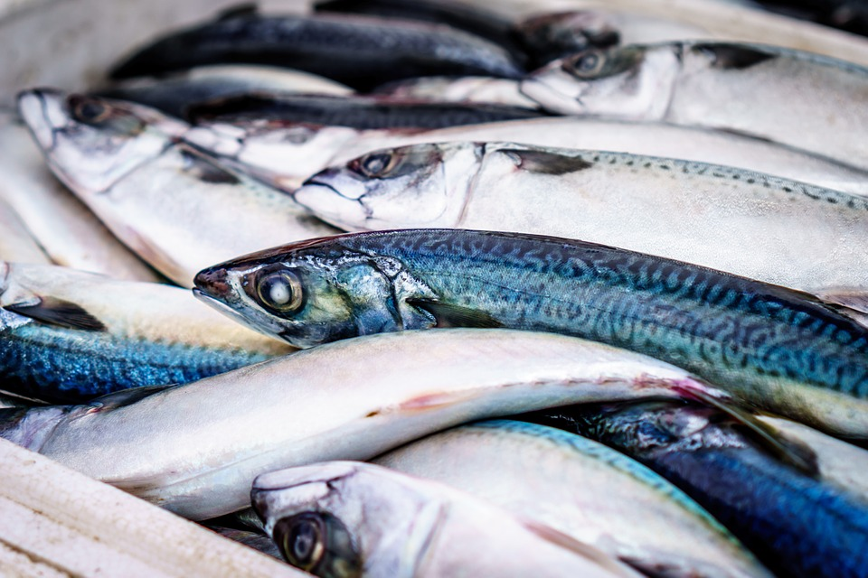

Start Bootstrap has everything you need to get your new website up and running in no time! Choose one of our open source, free to download, and easy to use themes! No strings attached!
Get Started!Start Bootstrap has everything you need to get your new website up and running in no time! Choose one of our open source, free to download, and easy to use themes! No strings attached!
Get Started!